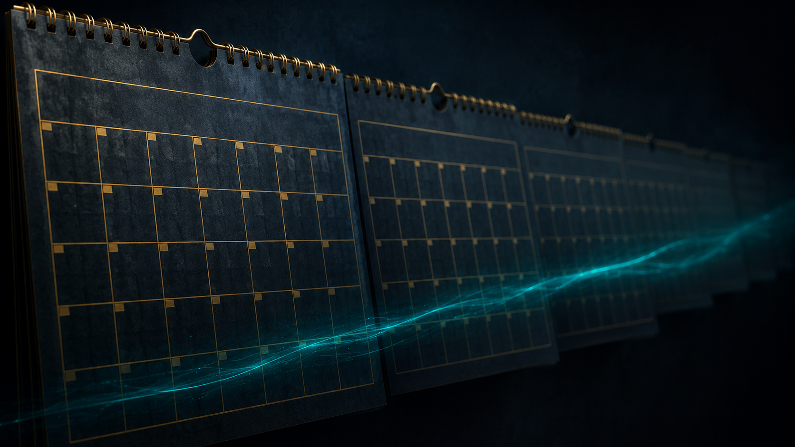

Sprenge den Nebel, der sich jedes Mal über dich legt, wenn es um Geld geht.
WAS WÄRE, WENN DU EINEN KONTOAUSZUG ÖFFNEN KÖNNTEST – UND EINFACH NUR RUHIG BLEIBST?
Kein Herzklopfen. Keine Schuldgefühle beim Preisschild im Supermarkt. Kein Gedankenkarussell um 2 Uhr nachts, das um dieselben drei Sätze kreist, die du gar nicht laut aussprechen würdest, weil sie sich so klein anfühlen.
Ich stelle dir etwas vor: Quantum Flow – Geldblockaden lösen, ein völlig neuer Weg, dein Verhältnis zu Geld zu verändern. Nicht, indem du noch mehr darüber nachdenkst. Sondern indem du für 22 Minuten aufhörst, es zu tun.
- Selbst wenn du schon jedes Mindset-Buch im Regal stehen hast.
- Selbst wenn du dich selbst nicht als „spirituellen Menschen" bezeichnen würdest.
- Selbst wenn du innerlich schon seufzt, weil du das Gefühl hast, wirklich alles versucht zu haben.
Diese Meditation ist nicht für Menschen, die noch eine Technik suchen. Sie ist für Menschen, die spüren, dass die Antwort nicht in noch einer Technik liegt.
Der Effekt zeigt sich in drei Größenordnungen. Für die einen ist es der erste ruhige Atemzug beim Blick aufs Konto. Für andere ist es das Gefühl, eine Rechnung zu bezahlen, ohne danach den ganzen Abend im Kopf durchzurechnen. Und für wieder andere ist es das, was am meisten zählt: ein neues, leiseres Grundrauschen im Kopf, jedes Mal, wenn das Wort „Geld" fällt.
Was hier neu ist:
- Keine Glaubenssatz-Arbeit auf dem Papier. Du analysierst nichts. Du hörst zu, während dein wacher Verstand leiser wird.
- Ein Ritual, das du behältst: die goldene Truhe, die Geldängste und alte Prägungen aufnimmt.
- 22 Minuten, keine Sekunde länger. Kein Kurs mit zwölf Modulen.
- Uneingeschränkte, lebenslange Nutzung – ausdrücklich auch als Einschlafhilfe.
Hörprobe
Ein kurzer Ausschnitt aus der Mitte der Meditation
Warum du hier keine Kundenstimmen findest
Ich könnte dir jetzt drei erfundene Zitate zeigen, mit Fantasienamen und einem gekauften Stock-Foto daneben. Manche Anbieter tun genau das. Ich tue es nicht.
Ich habe diese Meditation gerade erst fertiggestellt. Noch bevor ich groß darüber nachgedacht habe, sie breit zu vermarkten, wollte ich sie zuerst meiner eigenen Community zugänglich machen – exklusiv, und zu einem echten Herzenspreis. Nicht, weil sie weniger wert wäre, sondern weil mir wichtiger ist, dass sie bei den Menschen ankommt, die mir schon zuhören, als dass ich sie hinter einem hohen Einstiegspreis verstecke.
Das bedeutet auch: Es gibt noch keine Kundenstimmen, die ich dir zeigen könnte – nicht, weil ich sie zurückhalte, sondern weil sie schlicht noch nicht existieren. Wenn du dich jetzt entscheidest, gehörst du zu den ersten Menschen überhaupt, die diese Meditation hören. Kein Beweis-Theater. Stattdessen zeige ich dir im Folgenden so genau wie möglich, was in diesen 22 Minuten passiert und warum ich sie genau so gebaut habe, wie sie sind.
Der immer gleiche Geld-Tag
Hast du früher davon geträumt, erwachsen zu sein und frei zu sein? Und heute?
Du öffnest die Banking-App, bevor du überhaupt aufgestanden bist. Ein kurzer Blick, ein leichtes Zusammenziehen im Bauch. Du rechnest im Kopf mit, bevor die Kassiererin fertig gescannt hat. Du liest eine Rechnung zweimal, obwohl du sie beim ersten Mal schon verstanden hast. Abends taucht er wieder auf: der gleiche Gedankenkreis, die gleichen drei Sätze, die du dir nie laut sagen würdest.
Nicht einmal. Nicht zweimal. Jeden Tag. Jede Woche. Jedes Jahr.
Du hast Bücher gelesen, Podcasts gehört. Du kennst die Sätze auswendig: „Werde dir deiner Glaubenssätze bewusst." „Sei dankbar." „Denk in Fülle, nicht in Mangel." Und trotzdem: derselbe Stich im Bauch.
Wann genau haben wir eigentlich angefangen, ein Leben zu akzeptieren, das sich so anfühlt?
Für den Rest deines Lebens.

Ein Tag im Geld-Frieden
Stell dir diesen Tag vor. Nicht in ferner Zukunft. Bald.
Du wachst auf. Kein Reflex, sofort zur Banking-App zu greifen. Irgendwann später am Vormittag schaust du auf dein Konto – nicht aus Angst, aus Neugier. Die Zahl ist, was sie ist. Du atmest normal weiter.
Mittags kaufst du dir etwas, das du eigentlich nicht „gebraucht" hättest. Du zahlst, bedankst dich, gehst weiter. Kein Nachrechnen im Kopf auf dem Heimweg.
Vielleicht triffst du dich nachmittags mit einer Freundin auf einen Kaffee. Früher hättest du innerlich schon vorgerechnet. Jetzt bestellst du, was du willst, lachst, bist einfach da. Am Schaufenster, das früher ein leises „das kannst du dir eh nicht leisten" auslöste: kein Stich. Kein Nachgeschmack.
Zuhause liegt Post im Briefkasten. Umschlag auf, lesen, ablegen oder erledigen, fertig. Der Abend gehört dir.
Abends, im Bett, ist da kein Gedankenkarussell mehr. Nur die vertraute Stimme der Meditation, falls du sie hören willst – oder Stille, weil du sie inzwischen nicht mehr jeden Abend brauchst.
Andere schrauben an Kleinigkeiten. Eine kleine, wachsende Gruppe hat aufgehört, gegen das Gefühl zu kämpfen, und stattdessen die Ursache angesprochen. Genau das ist der Grund, warum es Quantum Flow überhaupt gibt.
Wer hinter Quantum Flow steht
Hallo. Ich bin Quantum Flow.
Kein Team, keine Agentur im Hintergrund, kein Guru mit Bühnenshow. Nur ich, mit einer sehr konkreten Frage, die mich nicht losgelassen hat: Warum verändert sich bei so vielen Menschen trotz jahrelanger Mindset-Arbeit am Geldthema so wenig?
Die Antwort, zu der ich gekommen bin: Wissen sitzt im wachen Verstand. Geldangst sitzt woanders. Deshalb habe ich kein weiteres Buch geschrieben, sondern eine Trance-Meditation gebaut.
Ich bin ausdrücklich kein Finanzberater und kein Therapeut. Was ich bin: jemand, der sich intensiv mit Entspannung und Trance-Zuständen beschäftigt hat, um emotionale Muster zu adressieren, die mit reinem Nachdenken kaum erreichbar sind.
Warum es Quantum Flow überhaupt gibt
Eigentlich müsste ich heute einfach nur ein weiteres Achtsamkeits-Feature in irgendeiner Wellness-App sein.
Ehrlich, das wäre der einfache Weg gewesen. Wenn du dich fragst, wo der Haken bei mir ist: reden wir kurz Klartext. Es gibt genug Anbieter, die dir versprechen, dass du „mit dieser einen Meditation" innerhalb von Tagen reich wirst. Es gibt kein Kleingedrucktes bei mir, weil ich das nicht verspreche. Ich verspreche dir etwas viel Kleineres und Realeres: ein verändertes Gefühl im Bauch, wenn das Wort „Geld" fällt.
Angefangen hat alles mit einer Beobachtung, die sich wiederholte. Immer wieder saßen mir Menschen gegenüber, die intellektuell längst alles wussten. Sie konnten ihre Glaubenssätze aufsagen wie ein Gedicht – und trotzdem zog sich beim Blick auf den Kontoauszug derselbe Bauch zusammen wie zehn Jahre zuvor.
Eine Szene hat sich mir besonders eingebrannt: eine Frau, die erzählte, wie ihre Mutter ihr als Kind heimlich Geld für den Schulausflug zusteckte, aus der eigenen, ohnehin knappen Haushaltskasse, mit den Worten: „Sag niemandem, dass wir das nicht einfach so hätten." Ein Satz, der sich tief einschreibt, lange bevor der Verstand versteht, was er da lernt: Geld ist Mangel. Geld ist Scham. Geld ist etwas, worüber man schweigt.
Aus solchen Beobachtungen wuchs eine einfache Überzeugung: Es gibt immer einen Weg – aber nicht immer den, den man zuerst versucht.
Die ersten Versuche waren nicht gut. Eine frühe Fassung des Skripts war fast 40 Minuten lang und so vollgepackt mit Erklärungen, dass niemand zur Ruhe gekommen wäre. Eine andere arbeitete mit einem zu abstrakten Bild. Wieder eine andere versuchte, zu viele Themen gleichzeitig zu adressieren. Drei Fehler: zu lang, zu abstrakt, zu unspezifisch.
Erst als das Skript auf 22 Minuten schrumpfte und aus dem Abstrakten eine konkrete goldene Truhe wurde, war ich zum ersten Mal selbst zufrieden mit dem Ergebnis.
Eine Entscheidung, die mich vermutlich Umsatz kostet: Ich verkaufe dir keinen Kurs mit zehn Modulen, obwohl sich das leichter teurer vermarkten ließe. Was hier wirkt, ist die Konzentration auf einen einzigen, sauber gebauten Prozess – nicht die Menge an Material drumherum.
Und jetzt zeige ich dir genau das. Schritt für Schritt, ohne aufgeblasene Versprechen.
Was mir bei dieser Meditation wichtig war
Bevor ich dir zeige, was du konkret bekommst, drei Entscheidungen, die ich beim Bauen bewusst getroffen habe:
Erstens: Kürze statt Vollständigkeit. Ich hätte versuchen können, alles unterzubringen — Geld, Beziehungen, Selbstwert, Karriere. Ich habe mich bewusst dagegen entschieden. Eine Sache, richtig gemacht, schlägt fünf Dinge, halb angerissen.
Zweitens: Bild statt Erklärung. Ich hätte dir mit Fachbegriffen erklären können, warum Glaubenssätze funktionieren. Ich habe mich stattdessen für ein einziges, klares Bild entschieden – die goldene Truhe –, weil ein Bild bleibt, während eine Erklärung verblasst.
Drittens: Ehrlichkeit statt Versprechen. Ich hätte dir große Zahlen versprechen können. Ich tue es nicht. Was ich dir stattdessen anbiete, ist Transparenz darüber, was in diesen 22 Minuten tatsächlich passiert.
Klingt gut. Warum macht es dann nicht jeder?
Die meisten Menschen greifen instinktiv zur bekannten Werkzeugkiste – Bücher, Podcasts, Kurse. Das ist nicht falsch. Es ist unvollständig. Diese Formate sprechen fast ausschließlich den wachen, analysierenden Teil des Kopfes an.
Wichtig: Das stimmt alles, was du dir vielleicht selbst schon gesagt hast. „Ich habe es doch schon versucht." Stimmt. Diese Beobachtungen sind nicht falsch – sie beschreiben nur die halbe Wahrheit.
Die andere Hälfte: Prägungen aus Kindheit und Jahrzehnten unbewusster Wiederholung sitzen nicht im Bereich, den du mit Nachdenken erreichst. Nicht, weil du es falsch gemacht hast. Sondern weil du mit dem falschen Werkzeug an der richtigen Stelle gearbeitet hast.
Du kannst jetzt weiter grübeln, warum bisherige Versuche nicht gewirkt haben. Oder du übernimmst die Kontrolle. Ich habe mich entschieden, dieses Werkzeug zu bauen. Die Entscheidung, es zu nutzen, liegt bei dir.
Die drei Ratschläge, die dir wahrscheinlich schon nicht geholfen haben
„Schreib deine Glaubenssätze auf und analysiere sie."
Das Versprechen: Wenn du siehst, was du glaubst, kannst du es rational widerlegen.
Wenn er scheitert: Du hättest nicht „tief genug" gegraben.
Die Wahrheit: Analyse spricht den wachen Verstand an. Ein Glaubenssatz, der mit sieben Jahren eingeschrieben wurde, lässt sich mit 35 nicht wegdiskutieren wie ein Rechenfehler.
„Sei einfach dankbarer für das, was du hast."
Das Versprechen: Dankbarkeit öffnet die Tür für mehr Fülle.
Wenn er scheitert: Du bist „nicht dankbar genug".
Die Wahrheit: Man kann dankbar UND angespannt sein. Dankbarkeit ersetzt keine Nervensystem-Regulation.
„Mach dir ein Vision Board."
Das Versprechen: Bilder deiner Wünsche ziehen sie an.
Wenn er scheitert: Du hast „nicht genug geglaubt".
Die Wahrheit: Ein Vision Board zeigt dir WAS du willst, nicht WARUM ein Teil von dir es sich bisher nicht erlaubt hat.
Was bekommen wir, wenn wir all diese Ratschläge brav befolgen? Ein Regal voller halb gelesener Bücher. Ein durchgestrichenes Notizbuch. Ein Vision Board in der Schublade. Selbst wenn wir mit diesem Rat „gewinnen" – wir verlieren trotzdem, weil das eigentliche Gefühl bleibt.
Durchschnittlicher Rat. Durchschnittliches Ergebnis. Und irgendwann: Stillstand.
Ich nenne das den Geld-Nebel
Es gibt einen Namen für das diffuse, nie ganz greifbare Unbehagen, das sich über jedes Geldthema legt. Ich nenne das den GELD-NEBEL.
Du erkennst ihn daran, dass du auf „Wie geht's dir finanziell?" reflexhaft mit „Ach, geht so" antwortest – egal, wie die Zahl auf dem Konto aussieht. Du erkennst ihn daran, dass „genug" ein Gefühl ist, das nie ganz erreicht wird.
Es ist egal, wie diszipliniert du sparst, wenn der Nebel dich dabei begleitet. Das ist keine Charakterschwäche. Es ist ein erlerntes Muster.
Die Menschen, die dir früher helfen sollten – Eltern, Lehrer:innen, der erste Finanzberater – konnten dir dabei nicht wirklich helfen. Nicht, weil sie es nicht wollten. Sondern weil sie den Geld-Nebel selbst nie durchschaut hatten.
Warum schlechter Rat trotzdem überlebt
Die Menschen, die dir „sei einfach dankbarer" geraten haben, sind nicht böswillig. Sie glauben wirklich, dass sie helfen. Was sie so gut wie nie tun: zugeben, dass der Rat selbst das Problem sein könnte.
Wer einer zum Scheitern verurteilten Strategie folgt – und sie perfekt ausführt – scheitert trotzdem.
Stell es dir so vor: Jemand rennt seit Jahren mit dem Kopf gegen eine Wand. Der Rat? „Du bist offenbar nicht oft genug dagegen gerannt." Bei diesem Beispiel würde niemand zustimmen. Bei Glaubenssatz-Arbeit gegen tief sitzende Geldangst nicken erstaunlich viele.
In Wahrheit gibt es einen Weg, der an einem anderen Hebel ansetzt.
Wie der Goldene-Truhe-Prozess Gestalt annahm
Eine kleine, meist unsichtbare Gruppe hat mit Geld einen anderen Umgang gefunden. Über diese Gruppe berichten die wenigsten Magazine – weil „ruhiger Umgang mit Geld" keine Schlagzeile hergibt.
Die Entwicklung lief in klar unterscheidbaren Phasen: Zuhören und Sammeln der immer gleichen inneren Sätze. Erste, zu lange und zu erklärende Skript-Entwürfe. Die Reduktion auf das Wesentliche – Erdung, goldenes Licht, die Truhe, Affirmationen. Und schließlich die heutige, 22-minütige Fassung, auf die ich mich nach eigenem, wiederholtem Anhören und Überarbeiten festgelegt habe.
Was mich durch diesen Prozess getragen hat, lässt sich in einem Satz zusammenfassen: Ich wollte lieber eine Fassung veröffentlichen, mit der ich selbst zufrieden bin, als eine, die schnell fertig war.
Ich sage dir ganz offen: Diese Meditation ist ganz neu. Es gibt noch keine große Geschichte, keine Zahlen, die ich dir zeigen könnte. Was es gibt, ist ein durchdachter, mehrfach überarbeiteter Prozess – und meine Bereitschaft, dir genau zu erklären, wie er funktioniert, statt dich mit Behauptungen zu überzeugen.
Welches dieser 6 Alten Geldskripte hält dich zurück?
Tief unter deinem bewussten Denken laufen Sätze mit, die so alt sind, dass du sie kaum noch als Sätze wahrnimmst. Ich nenne sie Die Alten Geldskripte.
„Geld ist schwer zu bekommen."
Diese Stimme meldet sich, bevor du überhaupt eine Chance ergreifst. Sie flüstert, dass sich Anstrengung ohnehin nicht lohnt.
„Es fühlt sich nie nach genug an."
Egal welche Zahl auf dem Konto steht – dieses Skript verschiebt die Ziellinie immer weiter.
„Ich darf nicht zu viel wollen."
Diese Stimme koppelt finanziellen Wunsch mit Scham, oft aus einem Elternhaus, in dem Bescheidenheit die höchste Tugend war.
„Reiche Menschen sind gierig oder kalt."
Ein Glaubenssatz, der dich unbewusst davon abhält, selbst finanziell zu wachsen.
„Ich muss hart arbeiten, um Geld zu verdienen."
Diese Stimme verknüpft Wohlstand untrennbar mit Erschöpfung.
„Wenn ich es habe, verliere ich es sowieso wieder."
Diese Stimme sabotiert im Stillen: unbewusst größere Ausgaben genau dann, wenn es finanziell gut läuft.
Diese sechs Skripte treten selten einzeln auf – sie stützen sich oft gegenseitig oder widersprechen sich sogar, was erklärt, warum sich das Gefühl rund um Geld so diffus anfühlt.
Ich kenne jedes einzelne dieser Skripte. Wichtig: Diese Skripte sind real. Sie brauchen wiederholte, andere Ansprache als reines Nachdenken.
Was ist dir ein ruhiger Kopf wert?
Stell dir vor, du müsstest jeden Monat nur eine Stunde weniger mit Geld-Grübeln verbringen. Was wäre dir das wert?
Was würdest du mit einem ruhigeren Kopf tun?
- Tiefer und schneller einschlafen, statt Kontostände durchzugehen
- Eine Ausgabe treffen, ohne sie danach zu rechtfertigen
- Ein Gespräch über Geld führen, ohne veränderte Stimme
- Eine Rechnung öffnen, ohne den Umschlag beiseitezulegen
- Einfach eine Zahl sehen – und weitergehen
Eine einzelne Sitzung bei einer Therapeutin oder einem Coach kostet häufig 80–150 € pro Stunde. Quantum Flow ersetzt keine Therapie. Als tägliches, wiederholbares Werkzeug für genau ein Thema kostet es aktuell einmalig 14,99 € (statt 29,99 €) und steht danach unbegrenzt zur Verfügung.
Der Ruhe-Rechner: Wie viel Grübel-Zeit sammelt sich an?
Hochgerechnet auf ein Jahr — nur zur Veranschaulichung, keine medizinische Aussage.
Drei Dinge, die diesen Weg so anders machen
Du kannst klein anfangen
Du brauchst 22 Minuten, Kopfhörer, und die Bereitschaft, zuzuhören.
Du wächst in deinem eigenen Tempo
Manche spüren sofort etwas, andere brauchen mehrere Durchläufe – beides ist richtig.
Du baust dir ein Werkzeug fürs Leben
Diese Meditation nutzt sich nicht ab. Sie wächst mit dir mit.
Die Geschichte, die mir gezeigt hat, wie groß der Raum wirklich ist
Anonymisiertes, zusammengefasstes Beispiel aus Gesprächen, die ich geführt habe.
Eine Frau, Mitte vierzig, erzählte beim Abendessen mit Freundinnen beiläufig, dass sie sich seit einem Jahr jeden Ersten des Monats fünf Minuten Zeit nimmt, um ihre Kontoauszüge in Ruhe durchzugehen. Ohne Panik. Die anderen am Tisch verstummten kurz.
Woher hatten die anderen eigentlich die Gewissheit, dass es nicht anders geht?
Wir alle tragen unbemerkt kleine, angezogene Handbremsen mit uns herum. Was wäre, wenn ein ruhiger Blick auf den Kontoauszug für dich genauso normal werden könnte? Was wäre, wenn eine unerwartete Ausgabe dich nicht mehr aus der Bahn wirft? Was wäre, wenn das Wort „Geld" einfach nur noch ein Wort wäre?
Brutale Wahrheit
Dir fehlt nicht noch mehr Wissen.
Wenn ich dir morgen die perfekte Erklärung für deine Geldblockaden liefern würde – wüsstest du dann genau, was zu tun ist? Die meisten Menschen verneinen das.
Kostenlose Trainingspläne gibt es überall, trotzdem schaffen es die wenigsten, allein damit ihre Fitness zu verändern. Wenn Information allein reichen würde, gäbe es diesen Widerspruch nicht.
Es gibt nur eine Sache, die an dieser Stelle wirklich zählt.
Wo wirst du in 12 Monaten mit deinem Geld-Gefühl stehen?
Auch „einfach weiter abwarten" ist eine Entscheidung.
Entscheide dich für eine Richtung. Hör auf, dem Durchschnittsrat zu folgen. Hör auf, das allein durchzustehen.
Spitzensportler:innen arbeiten mit mentalen Trainer:innen – selbst diejenigen, die längst Weltklasse sind. Menschen in Ausnahmesituationen greifen häufig auf mentale Vorbereitungstechniken zurück, oft inklusive Entspannungs- und Trance-Verfahren. Warum sollte das bei Geld anders sein?
Genau darum geht es hier. Ich stelle es dir jetzt im Detail vor.
Quantum Flow: Geldblockaden lösen
Quantum Flow ist eine Meditation, die sich ausschließlich auf einen einzigen Fokus konzentriert: Geldblockaden im Trance-Zustand aufzulösen.
- Eine vollständige 22-Minuten-Trance-Reise
- Die goldene Truhe als bleibendes inneres Bild
- Integrierte Affirmations-Passage zu Fülle und Wohlstand
- Keine Vorkenntnisse nötig
- Sofortiger digitaler Download
- Uneingeschränkte, lebenslange Nutzung
Du wirst dadurch nicht „über Nacht reich". Aber du bekommst ein realistisches, wiederholbares Werkzeug für ein ruhigeres Verhältnis zu Geld.
Wie unterscheidet sich Quantum Flow von allem anderen?
Präziser Fokus
22 Minuten, nur Geldblockaden
Trance statt Theorie
Zuhören statt Lesen
Wiederkehrendes Ritual
Die goldene Truhe als Anker
Integrierte Affirmationen
Im entspannten Zustand verankert
Kein Vorwissen nötig
Die Stimme führt vollständig
Sofort verfügbar
Digitaler Download
Unbegrenzt wiederholbar
Kein Verbrauch, kein Ablauf
Auch als Einschlafhilfe
Für den empfänglichsten Moment
Was Quantum Flow NICHT ist: Es ist NICHT ein weiteres Motivations-Video. Es ist NICHT ein aufgeblähtes E-Book. Es ist NICHT eine wahllose Sammlung von Gratis-Tipps.
Diese Meditation funktioniert unabhängig von Alter, Vorwissen oder Lebenssituation.
Der Goldene-Truhe-Prozess: was in den 22 Minuten wirklich passiert
Erdung (ca. Minute 0–4)
Aus dem Kopf in den Körper
Die Stimme führt dich Schritt für Schritt durch Atem, Körperempfinden und Raum.
Verbindung mit dem goldenen Licht (ca. Minute 4–9)
Der Anker für den Rest der Reise
Ein Bild wird aufgebaut, das während der gesamten Meditation als Anker dient. Warum Gold? Wärme und Licht werden kulturübergreifend mit Sicherheit und Fülle assoziiert – eine bewusste Gestaltungsentscheidung.
Die goldene Truhe (ca. Minute 9–15)
Das Herzstück der Meditation
Eine symbolische Truhe nimmt alte Geldängste, Glaubenssätze und Prägungen auf.
Auflösung und Loslassen (ca. Minute 15–18)
Kurz genug, um nicht ins Grübeln zurückzufallen
Die Truhe schließt sich, das Losgelassene wird symbolisch verabschiedet.
Affirmations-Verankerung (ca. Minute 18–22)
Fülle und Wohlstand, sanft verankert
Im entspannten Zustand werden Affirmationen eingesprochen. Warum erst am Ende? Eine Affirmation, die du hörst, bevor du entspannt bist, prallt am wachen Verstand ab.
Diese fünf Phasen laufen als ein durchgehender Bogen ab. Wichtig: Diese Meditation konfrontiert dich nicht direkt mit schmerzhaften Erinnerungen. Die Arbeit läuft über ein Symbol – die Truhe –, nicht über direktes Wiedererleben.
Antworten auf deine konkreten Fragen
Keine Zeit?
22 Minuten passen in eine Mittagspause oder die letzten Minuten vor dem Einschlafen. Die Phase 1 – Erdung ist bewusst kurz gehalten.
Kein Eso-Typ?
Die Sprache ist bewusst schlicht. Phase 2 arbeitet mit einem einfachen Bild, keinem komplizierten Weltbild.
Schon alles versucht?
Vermutlich Formate, die den wachen Verstand ansprechen. Der Goldene-Truhe-Prozess setzt bewusst woanders an.
Skeptisch, ob ein Audio etwas verändern kann?
Diese Skepsis ist gesund. Ich verspreche keine Wunder – nur eine durchdachte 22-minütige Erfahrung.
Angst, "falsch" zu meditieren?
Es gibt kein Falsch. Die Stimme führt vollständig durch alle fünf Phasen.
Kein ruhiger Ort zuhause?
Kopfhörer reichen – Bus, Bahn oder das eigene Bett funktionieren.
Angst vor dem Thema Geld selbst?
Dafür ist Phase 3 – Die Goldene Truhe gebaut: ein sanfter, indirekter Zugang über ein Bild.
Meditations-App nach 3 Tagen aufgegeben?
Kein Abo, kein Streak-Zähler. Ein Durchlauf ist bereits vollständig.
Funktioniert das ohne "an mich glauben"?
Phase 5 setzt bewusst erst nach der Entspannung an.
Was, wenn ich einschlafe?
Ausdrücklich erlaubt und Teil des Konzepts – dein Unterbewusstsein hört mit.
Nur für Frauen?
Nein. Geld-Nebel kennt kein Geschlecht.
Jeden Tag hören nötig?
Nein. Es gibt kein "richtiges" Pensum — nur deins.
Warum ich dir keine Beweise zeige, die ich nicht habe
Es wäre einfach, dir jetzt eine Liste von Fallstudien zu zeigen. Ich habe sie nicht. Quantum Flow ist neu, und ich werde dir nichts vorspielen, das noch nicht existiert.
Was ich dir stattdessen anbiete: maximale Transparenz über den Mechanismus. Du hast in Block 21 exakt gesehen, was in jeder einzelnen Minute passiert. Das ist meine Version von Beweisen.
Sobald reale Käufer:innen ihre Erfahrung mit mir teilen und der Veröffentlichung zustimmen, werde ich diese Seite aktualisieren.
So einfach ist der Zugang
- Sofortiger Vollzugriff direkt nach dem Kauf
- Höre sie, wie es für dich passt — keine feste Reihenfolge
- Mobil und unterwegs nutzbar
- Lebenslanger Zugriff — heute, in einem Jahr, in fünf Jahren
Was zusätzlich in den 22 Minuten steckt
Die Affirmations-Passage zu Fülle und Wohlstand ist direkt in die Meditation integriert – kein separates Zusatzprodukt.
Es geht hier nicht um zusätzliches Konsummaterial, sondern um ein einziges, dichtes Werkzeug.
Warum eine einzige Meditation mehr wert sein kann als eine Sitzung vor Ort
Stell dir eine einzelne Präsenz-Sitzung bei einer Hypnose-Fachperson vor: Terminfindung, Anfahrt, oft 100 € oder mehr für eine Stunde. Quantum Flow kehrt dieses Modell um: einmal bezahlen, für immer nutzen.
Die Wiederkommer-Klausel: Wenn die Meditation dich beim ersten Hören noch nicht vollständig erreicht, komm zurück, hör sie erneut, in einer anderen Stimmung. Dein Zugriff bleibt bestehen, so lange du ihn brauchst.
Für wen das hier gemacht ist – und für wen nicht
Das ist NICHT für dich, wenn:
- Du eine Garantie suchst, dass sich dein Kontostand in Tagen verändert
- Du jede Form von Trance-/Entspannungsarbeit grundsätzlich ablehnst
- Du eine einmalige "Wunderpille" suchst
- Du dich aktuell in einer akuten psychischen Krise befindest
Der letzte Punkt ist mir besonders wichtig, auch wenn er mich Verkäufe kosten kann: Quantum Flow ersetzt keine Therapie. Bei akuten Krisen ist eine Fachperson der richtige erste Ansprechpartner.
Das hier ist wahrscheinlich genau richtig für dich, wenn:
- Du bereit bist, dir 22 Minuten Zeit zu nehmen — auch mehrfach
- Du eher geduldig-methodisch als ungeduldig herangehst
- Du einen grundlegenden Ansatz suchst statt eines oberflächlichen Tricks
- Du bereit bist, dich kurz mit einem manchmal unbequemen Thema zu beschäftigen
Häufige Fragen
Wird das bei mir funktionieren?
Woher weißt du, dass das bei mir etwas verändert?
Ich kann dir keine konkreten Ergebnisse in einem Zeitraum versprechen. Niemand kann das seriös. Was ich verspreche: einen sorgfältig aufgebauten Prozess – und 14 Tage, es selbst herauszufinden.
Was, wenn ich einfach nichts spüre?
Manche spüren sofort etwas, andere brauchen mehrere Wiederholungen. Beides normal.
Muss ich an Energiearbeit glauben?
Nein. Die Meditation arbeitet mit bildhafter Sprache und Entspannung.
Mentale Hürden & Zweifel
Noch ein Punkt auf der To-do-Liste?
Kein Kurs mit Wochenplan. Eine einzelne Audiodatei — Play drücken, wenn du willst.
Was, wenn ich einschlafe — war das umsonst?
Nein, Einschlafen ist Teil des Konzepts.
Warum sollte das anders sein als bisherige Versuche?
Weil bisherige Versuche vermutlich den wachen Verstand ansprachen. Der Goldene-Truhe-Prozess setzt woanders an.
Ist 14,99 € nicht viel für eine Audiodatei?
Verglichen mit einer Präsenz-Sitzung: das Gegenteil — lebenslanger, unbegrenzter Zugriff, aktuell zum reduzierten Aktionspreis statt regulär 29,99 €.
Warum sollte ich einem Produkt ohne Kundenstimmen vertrauen?
Vertrau nicht mir, vertrau der Transparenz: Du hast in Block 21 exakt gesehen, was passiert, Minute für Minute — plus 14 Tage Geld-zurück-Garantie zum Selbsttesten.
Ist es das Richtige für mich?
Ich habe Angst, mich unwohl zu fühlen.
Bewusst sanft aufgebaut, ohne Konfrontation. Du kannst jederzeit pausieren.
Reicht eine Meditation für so ein großes Thema?
Eine Meditation verändert nicht automatisch jahrzehntelange Prägungen. Sie ist ein wiederholbares Werkzeug — mehr verspricht dieser Text bewusst nicht.
Was, wenn es mir nicht hilft?
Dafür gibt es die 14-tägige Geld-zurück-Garantie.
Kombinierbar mit Therapie/Coaching?
Ja, viele kombinieren beides.
Was, wenn mir Stimme/Musik nicht gefällt?
Auch dann greift die 14-tägige Garantie.
Kopfhörer nötig?
Beides funktioniert, Kopfhörer intensivieren meist die Erfahrung.
Preis, Garantie und deine Entscheidung
- 22-Minuten-Trance-Meditation, der vollständige Goldene-Truhe-Prozess
- Integrierte Affirmations-Passage zu Fülle & Wohlstand
- Sofortiger digitaler Download
- Uneingeschränkte, lebenslange Nutzung
14-Tage-Geld-zurück-Garantie
Du hast 14 Tage Zeit, die Meditation zu hören und zu spüren, ob sie zu dir passt. Wenn nicht, schreib mir, und du bekommst dein Geld zurück — mit der ehrlichen Bitte, es vorher wirklich einmal in Ruhe zu probieren.
Stell dir vor, es ist ein Jahr später. In der einen Version hast du heute die Seite geschlossen, weiter gegrübelt. In der anderen hast du diese 22 Minuten heute zum ersten Mal gehört. Ein Jahr später öffnest du deinen Kontoauszug, und da ist er nicht mehr, der reflexhafte Stich. Nur eine Zahl. Nur ein Blick. Nur du, ruhig.
Ja, ich will meinen Geld-Nebel auflösen →PS 1: Quantum Flow ist eine 22-minütige Trance-Meditation, die Geldblockaden nicht analysiert, sondern im entspannten Zustand anspricht — über Erdung, goldenes Licht, die goldene Truhe und Affirmationen. Aktuell einmalig 14,99 € statt 29,99 €, sofort als Download, lebenslang nutzbar, 14 Tage Garantie.
PS 2: Falls du unsicher bist: Die Garantie gilt 14 Tage. Du kannst es in Ruhe ausprobieren.
PS 3: Der Geld-Nebel verschwindet nicht von allein, nur weil noch mehr Zeit vergeht. Die einzige offene Frage ist, ob du dir endlich ein Werkzeug gibst, das an der richtigen Stelle ansetzt.
Hinweis: Diese Meditation ist ein Selbsthilfe-Werkzeug und ersetzt keine therapeutische, psychologische oder finanzielle Beratung. Bei akuten Krisen wende dich bitte an eine entsprechende Fachperson.